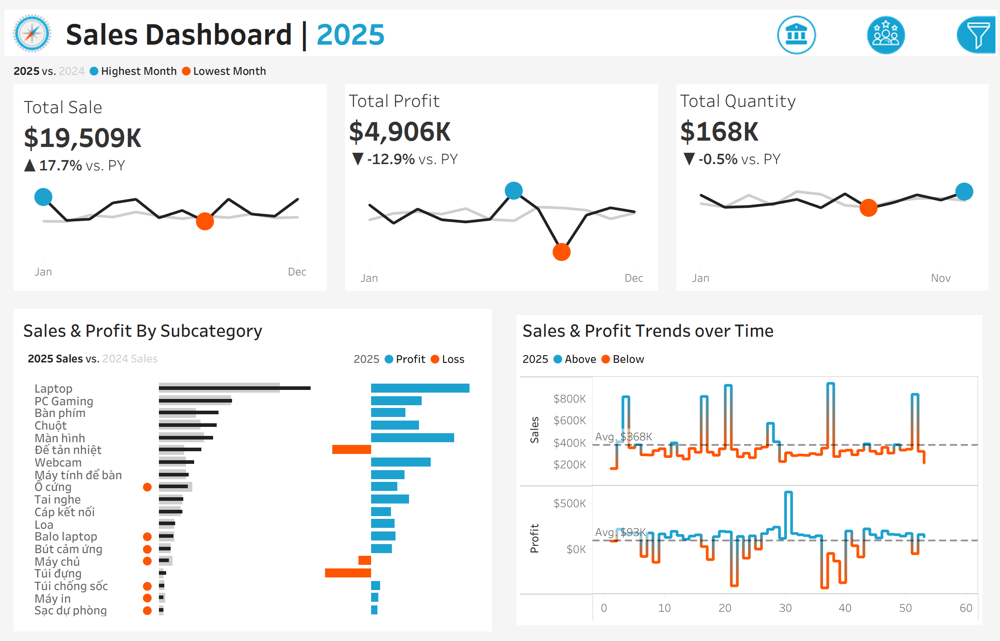
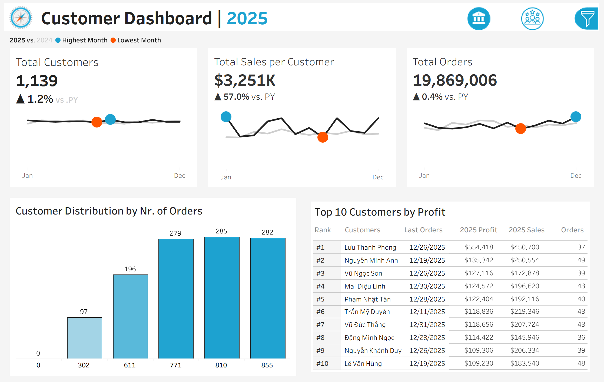

Data Visualization • Power BI
An electronics retail company needed a comprehensive view of their 2024 and 2025 performance. The goal was to move beyond simple spreadsheets and create an interactive tool to evaluate Year-over-Year (YoY) growth, diagnose profitability issues at the product level, and identify VIP customer segments for targeted marketing.

The Sales view provides a high-level overview of revenue vs. profit dynamics.

Shifting focus to the 1,139 active customers to understand retention and value.